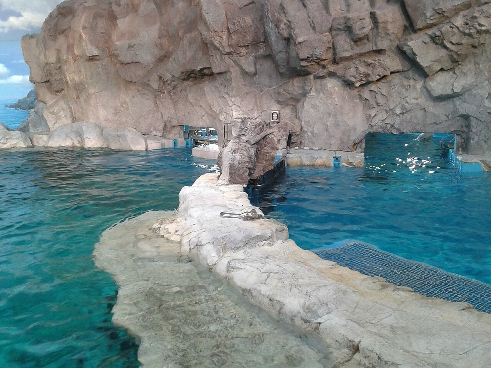
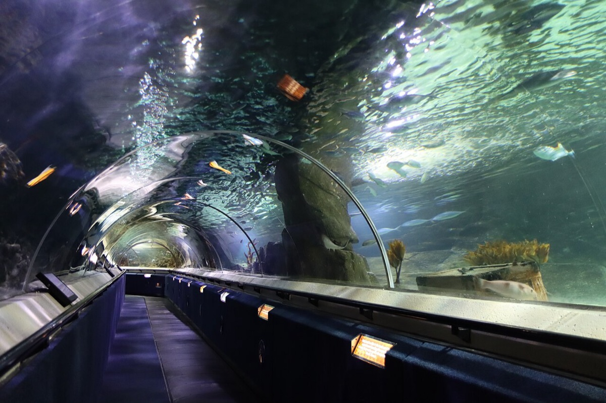
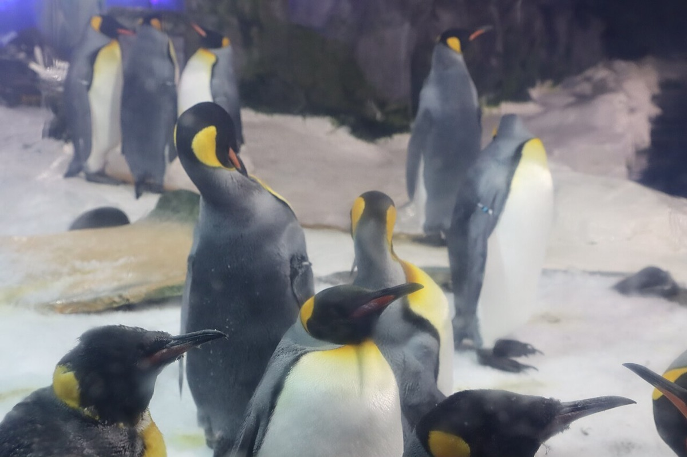

壹
行程安排
ITINERARY · 默认展开 · 点击可收起
▾
08:30
滨江出发
导航直接设「杭州长乔极地海洋公园售票处」。路线:西兴大桥 → 风情大道高架 → 湘湖隧道 → 湘湖路 777 号,约 10 km(高德/百度实时路况为准)。周末湘湖周边车位紧,9 点前到最稳;车上顺手确认线上订单和当日演出时刻表。
▾
09:00
开园即入
官方公示开放时间 09:00–17:00,16:00 停止入场(部分购票渠道写 16:30,以现场公示为准)。进门第一件事:拍下当天的演出时刻表(园区大屏/公众号),再按场次把动线倒排——场次逐日调整,先定剧场时间,其余展区填空。
▾
09:20
先刷室内馆:海兽湾 + 企鹅岛
刚开园人最少,先走室内。企鹅岛约 3000㎡、三层视角,-5℃ 恒温,巨型落地窗看企鹅排队跳水;海兽湾有海狮、海狗、海豹、海象。室内外温差大,进出勤穿脱。
▾
10:20
白鲸海 + 上午剧场
白鲸海约 8000㎡,两层剧场加水下隧道,是全园招牌。提前 15–30 分钟入场占座,周末好位置靠抢;坐前排会被白鲸喷水互动,相机手机先收好。当天第一场白鲸/鲸奇演出按时刻表走。
▾
11:40
雨林海豚湾
海豚、鲨鱼、魔鬼鱼、珊瑚礁雨林缸,以室内为主——正午最晒的两个小时正好泡在这里。海豚剧场就在三楼,按时刻表提前进场。
▾
12:40
午饭
园内餐厅解决最省事(园内水 10 元起,餐饮偏贵)。入园须知写「谢绝携带食物、每人限带 1 瓶未开封 ≤500ml 饮品」,要不要自带先看现场公告。若打算出园吃(湘湖路 / 潘水路一带),出闸前先问工作人员能否当日再次入园。
▾
14:00
下午场剧场
挑上午没看的那一场:海豚欢乐秀 / 美人鱼 / 海狮功夫秀。周末常有加场,以当天时刻表为准。
▾
15:20
梦幻水母宫 + 极地熊风
水母宫最出片(关闪光灯、别拍玻璃);极地熊风是北极熊加棕熊的室内外展区,傍晚凉快,熊更活跃。看完顺路补钱塘江流域展区(江豚、鲟鱼)和巨型鲸鱼雕塑打卡。
▾
16:40
出园,顺路看湘湖
同一条湘湖路往东 978 号就是「跨湖桥遗址博物馆」——免费、免预约,持身份证/社保卡入馆,周二至周日 9:00–17:00(16:30 停止入馆,周一闭馆)。时间够再沿湖走到跨湖桥。
▾
18:00
湘湖日落
2026-09-19 日落 18:00,闭园后正好赶上。湖边堤岸、跨湖桥随便站;想看无遮挡的全景,可开车约 10 分钟到一览亭 / 先照禅寺方向,能俯瞰三江交汇。想省腿力就坐湘湖游船(单程 20 元、往返 40 元,约 30 分钟)。
▾
19:00
晚饭 + 返程
两个实惠选择:湘香蒸菜馆(湘湖店),湘湖路 84-8 号,人均约 81 元,萧山蒸菜老店(鱼头、酱油蒸河虾、梅干菜蒸黄刺鱼);或潘水大院湘湖蒸菜馆(潘水店),潘水路 798 号,人均约 85 元(白切鹅肉、千岛湖鱼头)。吃完走风情大道高架回滨江,20:30 前后到家。
贰
当日天气 · 时效信息
SAT 2026-09-1929.7℃
周六 · 多云到阴 · 22.4 – 29.7 ℃
快照 2026-09-15 10:22
数据来自 Open-Meteo 公开数值预报(湘湖坐标 30.15°N, 120.21°E)。页面打开时自动刷新一次,若失败则显示下面这份出行前的快照——出发前一天务必再看一眼官方预报。
天气多云到阴
气温22.4–29.7℃
体感最高32.5℃
降水概率≤35%
累计降水0.0 mm
风 / 阵风8.9 / 21.2 km/h
湿度52–91%
紫外线7.2 · 强
日出05:45
日落18:00
开园–闭园09:00–17:00
建议出发08:30 前
演出
场次每天都不一样,而且各渠道给的时间互相冲突(白鲸一场有写 10:30 也有写 10:40,海豚有写 12:00 也有写 11:30)。别照抄攻略,进园先看当天时刻表,按场次倒排动线。
开园
09:00–17:00,16:00 停止入场(政府公示口径;部分购票渠道写 16:30)。暑期夜场是否延续到 9 月未确认,当天以公众号/现场公示为准。
门票
周末容易售罄,建议提前 1 天线上买。票价见下一节,官方小程序/公众号价格才是准的,代理站的价只能当参考。
台风
9 月仍在台风影响期。出发前 48 小时看中央气象台的路径预报;一旦有台风预警,景区可能临时闭园,行程要留退路。
停车
湘湖一/二期停车场按发改批复口径:旅游旺季双休日 10 元/小时(长假 15 元),每次最高按 6 小时计,即最多 60 元;18:00–次日 8:30 免费,15 分钟内免费。9/19 属哪一档以现场标价为准。
温差
室外 22–30℃,馆内常年偏凉、企鹅岛 -5℃ 展区,一进一出差十几度。带一件薄外套,给孩子多备一件,别在馆里冻着看企鹅。
防晒
紫外线指数 7.2(强),午后体感 32℃ 上下。遮阳帽、防晒霜、水都要带;正午那两小时安排在室内馆最舒服。
近十年同期气候(2016–2025 年 9 月 15–23 日,湘湖/萧山,Open-Meteo 历史再分析,共 90 天样本):
平均最高 27.5℃
平均最低 21.3℃
有雨日占比 51%
最大单日降水 64 mm
年份间最高温区间 19–36℃
九月中下旬的杭州正处在「早晚转凉、午后闷热、阵雨随机」的换季段:十年里有雨的日子占一半。折叠伞 + 薄外套是这趟行程性价比最高的两件装备;真遇上大暴雨,把室内馆和剧场排满,行程照样成立。
叁
怎么去
GETTING THERE推荐 · 自由支配
🚗 自驾(滨江出发)
- 路线:西兴大桥 → 风情大道高架 → 湘湖隧道 → 湘湖路 777 号
- 里程:约 10 km(OSM 路网测算),车程 20 分钟上下;周末湘湖周边易堵,留足余量
- 停车:湘湖一/二期停车场,旺季双休日 10 元/小时、每次最高按 6 小时计;18:00 后免费
- 导航关键词:「杭州长乔极地海洋公园售票处」;就近有湘湖度假区美食广场停车场
不想开车
🚇 地铁 + 打车 / 🚌 公交
- 地铁:1 号线湘湖站下车,打车约 10 分钟直达(出口 B / C 说法不一,出站跟指示牌走)
- 公交:405、706、707、716 路到「跨湖桥遗址博物馆」站,下车步行约 55 米即到
- 适合:不想操心车位、或打算看湘湖日落后再回城的人——晚上湖边打车比找车位轻松
进园前顺手把当天演出时刻表拍下来(售票处/入口大屏、公众号都有),这份时刻表比任何攻略都新。
肆
门票与优惠
TICKETS360 元成人票(代理渠道参考)
299 元优待票(儿童 / 老人 / 教师 / 军人 / 残疾人)
659 元亲子票 1 大 1 小
1019 元家庭票 2 大 1 小
先说清楚价格口径:上面这组数字来自票务代理网站(2025-04 两个独立页面报价一致),不是官方价目表;官方公众号/小程序与现场价可能不同,历年也一直在上调。下单前请以官方渠道当日价为准,本页只用来估算预算。
优待口径(以景区当日公告为准):全价票身高 ≥1.4 m;优待票为 1.0 m(含)–1.4 m 儿童、70 周岁(含)以上、残疾人、30 年(含)以上教龄教师、现役军人、心智障碍人员,均须出示证件;1 m 以下儿童免票,每位购票成人限带一名免票儿童,儿童与老人都要成人陪同。免票线原先只有单一来源,现已两处印证(杭州本地宝门票页与游客实拍口径一致),但出发前打 0571-82609090 确认最稳。
各类卡能不能用?——2026-09-15 专项核查,结论:都不能。
① 杭州公园年卡(50 元/年):不适用。官方核定范围是 12 个点位(杭州动物园、植物园、杭州少年儿童公园、岳王庙、六和塔、虎跑、钱王祠、玉皇山、万松书院、郭庄、木兰山茶园、云栖竹径),另有补差 3 处、明确不适用 3 处——名单里没有本园。
② 杭州文旅惠民卡(29.9 元/年,市民卡 APP 市民码 /「杭州文旅卡」小程序办理):不在列。官方"景区一览图"的 29+ 家名单里,萧山区只有「东方文化园」,没有长乔极地海洋公园。它的规则是免首道门票、每人每景区每天一次、不含夜场与其他收费项目,且限杭州户籍/社保/居住证人群。不要为了本园买这张卡。
③ 杭州市民卡本身:不打折。市民卡/市民码只是公园年卡的载体(开通还要另付 50 元);市人社局"一卡通"的文旅场景列的是博物馆、文化馆、城市书房,没有景区折扣机制。
④ 诗画浙江·文旅惠民卡(省级,199 元):不在列。2025 版 112 家官方名单的杭州段是黄龙洞、西溪湿地、东方文化园、超山、钱王祠、千岛湖石林、大慈岩、太湖源、龙门古镇、黄公望;2026 版新增的亲子项目也只有 Meland、天台山雪乐园、西子嘉年华。
⑤ 两个容易踩的坑:并不存在"长三角文旅惠民卡",现行的是"长三角文旅休闲年卡"(198 元/95 景区),而且全在江苏、2025-12-31 已到期;"大杭州旅游年卡/大杭州畅游卡"也不是官方名称,29.9 元那个产品的正式名字就是杭州文旅惠民卡。
⑥ 唯一还有一线可能的:萧山文旅消费券。萧山 2026 年投放 1000 万元,档位如"满 50 抵 25、满 300 抵 150",但官方从不公布商户名单——只能在携程/美团活动页搜本园,或到售票口问一句。
所以能省的只有:本园自己的年卡(成人约 1400 元、学生 1196 元、亲子 2596 元,代理渠道口径;官网 hz-polar.com 目前打不开)、1 m 以下儿童免票,以及上面那几类优待票。想 100% 确认,打 0571-82609090 或市民卡客服 96225。
① 杭州公园年卡(50 元/年):不适用。官方核定范围是 12 个点位(杭州动物园、植物园、杭州少年儿童公园、岳王庙、六和塔、虎跑、钱王祠、玉皇山、万松书院、郭庄、木兰山茶园、云栖竹径),另有补差 3 处、明确不适用 3 处——名单里没有本园。
② 杭州文旅惠民卡(29.9 元/年,市民卡 APP 市民码 /「杭州文旅卡」小程序办理):不在列。官方"景区一览图"的 29+ 家名单里,萧山区只有「东方文化园」,没有长乔极地海洋公园。它的规则是免首道门票、每人每景区每天一次、不含夜场与其他收费项目,且限杭州户籍/社保/居住证人群。不要为了本园买这张卡。
③ 杭州市民卡本身:不打折。市民卡/市民码只是公园年卡的载体(开通还要另付 50 元);市人社局"一卡通"的文旅场景列的是博物馆、文化馆、城市书房,没有景区折扣机制。
④ 诗画浙江·文旅惠民卡(省级,199 元):不在列。2025 版 112 家官方名单的杭州段是黄龙洞、西溪湿地、东方文化园、超山、钱王祠、千岛湖石林、大慈岩、太湖源、龙门古镇、黄公望;2026 版新增的亲子项目也只有 Meland、天台山雪乐园、西子嘉年华。
⑤ 两个容易踩的坑:并不存在"长三角文旅惠民卡",现行的是"长三角文旅休闲年卡"(198 元/95 景区),而且全在江苏、2025-12-31 已到期;"大杭州旅游年卡/大杭州畅游卡"也不是官方名称,29.9 元那个产品的正式名字就是杭州文旅惠民卡。
⑥ 唯一还有一线可能的:萧山文旅消费券。萧山 2026 年投放 1000 万元,档位如"满 50 抵 25、满 300 抵 150",但官方从不公布商户名单——只能在携程/美团活动页搜本园,或到售票口问一句。
所以能省的只有:本园自己的年卡(成人约 1400 元、学生 1196 元、亲子 2596 元,代理渠道口径;官网 hz-polar.com 目前打不开)、1 m 以下儿童免票,以及上面那几类优待票。想 100% 确认,打 0571-82609090 或市民卡客服 96225。
别买错园:隔壁「长乔亲子乐园」是独立售票的另一个园区,票不通用;「杭州海底世界」(南山路)早已闭园,和这里没关系。
伍
五大剧场 · 怎么看
SHOWS
海豚欢乐秀 · 雨林海豚湾三楼
鲸奇之旅 · 白鲸海二楼
白鲸之恋 · 白鲸海一楼
海狮功夫秀 · 海兽湾
美人鱼 · 亲子乐园欢乐岛二楼
| 参考场次 | 来源 | 建议 |
|---|---|---|
| 白鲸 10:30 / 14:00 | 票务代理站 | 四组来源互相冲突,都只能当区间参考。稳妥做法:进门拍下当天时刻表 → 先定剧场场次 → 其余展区填空档。每场提前 15–30 分钟入场,周末好位置靠抢。 |
| 白鲸之恋 10:40 / 13:45 · 鲸奇之旅 10:30 / 13:30 · 海豚 12:00 / 14:00 · 海狮 11:00 / 15:00 · 海象 9:50 / 15:20 | 游客实拍(2026-09) | |
| 白鲸 / 海豚 11:00 / 14:00 | 旅游攻略站 | |
| 海豚 11:30 / 15:30 · 雨林剧场海狮 13:00 | 票务代理站 |
观演三条:① 坐前排会被白鲸喷水——相机、手机、包先套好防水或往后一排;② 演出时长一般在 20–30 分钟,别踩着点进场;③ 表演为室内剧场为主,下雨不影响,正好把雨天时段留给剧场。
想更近距离?白鲸互动 / 海豚互动是单独付费项目(代理渠道约 298 元/人、398 元/2 人),名额有限要预约,通常与门票分开买;带孩子的可以现场问一下当天是否还有余位。
陆
展区与动线
ZONES
🐋
白鲸海
约 8000㎡,两层剧场 + 水下隧道,全园招牌。鲸奇之旅与白鲸之恋都在这里。
🐧
企鹅岛
约 3000㎡、三层视角,-5℃ 恒温。10 月—次年 3 月是繁殖季,这段时间来最能看出"戏"。
🐬
雨林海豚湾
海豚、鲨鱼、魔鬼鱼、珊瑚礁与亚马逊雨林缸,室内为主,正午避暑首选。
🐻❄️
极地熊风
北极熊加棕熊,室内外结合展区;傍晚气温降下来,熊更爱动。
🎐
梦幻水母宫
全园最出片的展区。关闪光灯、别拍玻璃,水母的形态自己会说话。
🌊
海兽湾 · 钱塘江流域
海狮、海狗、海豹、海象都在海兽湾;钱塘江流域展区有江豚和鲟鱼,本地物种专场。
1
入口 → 海兽湾:开园即入,先看剧场外的动物
2
白鲸海:上午场演出 + 水下隧道
3
雨林海豚湾:正午室内避暑 + 海豚剧场
4
极地熊风:室内外展区,顺路
5
企鹅岛:下午人少些,慢慢看
6
梦幻水母宫 → 出口:收尾打卡,顺路补钱塘江流域
留 6–8 小时最从容:19 个展区 + 5 个剧场,想全看完并看完两场以上演出,一天刚刚好。
柒
费用计算器
BUDGET2
门票(代理渠道参考 360/人)720
互动体验(可选)0
午餐(园内,人均约 60)120
油费 + 停车(整车,停车最高 60)120
合计
960
门票按代理渠道成人 360 元估;官方渠道常有优惠、优待票 299 元,以当日实际支付为准。互动体验 298 元/人为代理渠道价,名额有限需预约。停车按旺季双休日 10 元/小时、最高 6 小时计(约 60 元)。近旁湘湖游船(往返 40 元)、跨湖桥遗址博物馆(免费)另计。
捌
行前清单
CHECKLIST · 记得勾选✓
提前 1 天线上购票(周末有售罄风险)✓
带身份证原件(入园与优待核验都用得上)✓
薄外套(馆内偏凉,企鹅岛 -5℃)✓
折叠伞 + 防晒(近十年同期 51% 的日子有雨,紫外线 7.2)✓
充电宝与车充(拍照 + 导航双耗电)✓
给娃带推车或现场租(园内提供婴儿车租赁)✓
出发前查台风预警与官方开放公告✓
到园先拍当日演出时刻表✓
若打算出园吃饭,先问闸口能否当日再次入园✓
停车位置拍张照(湘湖停车场分区多)0 / 10
玖
顺路湘湖
XIANGHU LAKE
跨湖桥遗址博物馆湘湖路 978 号,免费、免预约,周二至周日 9:00–17:00(16:30 停止入馆,周一闭馆),持身份证/社保卡入馆。就在海洋公园同一条路上。
湘湖跨湖桥景区(4A)越王路 108 号,全湖免费开放,游客中心 08:30–17:00。湘湖度假区总规划约 35 km²、水域约 6.1 km²,环湖彩色跑道 7.6 km,走一段就够。
湘湖游船城山码头 ↔ 湖山码头,单程 20 元、往返 40 元,约 30 分钟;摇橹船观鸟线 40 元/人;观光车 3 元/站。日落前后坐船最舒服。
一览亭 / 先照禅寺看日落的高点,能俯瞰钱塘江、富春江、浦阳江三江交汇,无遮挡。从湖畔开车约 10 分钟。
花海香田近 300 亩,距定山广场约 1 公里,夏播秋收——九月正是格桑花、月见草、硫华菊的季节。
下孙文化村 / 老虎洞山下孙文化村免费、全天开放;老虎洞山 07:00–17:00(门票口径未核实),都在湘湖周边,时间富余再排。
时效提醒:湘湖水景秀(音乐喷泉)此前为免费、19:30 与 20:00 两场,但信息来自 2023 年,2026 年是否照常演出未核实;游船票价也是 2024 年口径。当天以现场公告为准——反正看完日落再决定,不亏。
拾
实用贴士
TIPS
时
8:30 前出发,9 点开园就进。周末客流高峰在 10:30 之后,早到一小时能多刷两个馆,也抢得到车位。
票
只认官方渠道的价,各类卡大概率用不上。代理站报价只能估算;优待票要带齐证件;杭州公园年卡与文旅惠民卡都没查到覆盖本园(核查过程见「门票与优惠」一节,可打 96225 复核)。
演
场次每天不同,进门先拿时刻表。提前 15–30 分钟入场;前排会被白鲸喷水,电子设备先收好。
娃
推车可带,园内也有婴儿车租赁。企鹅岛 -5℃,给孩子多备一件外套;剧场人多时牵好手。
拍
关闪光灯、别拍玻璃。闪光会惊扰动物也拍不出好片;自拍杆、滑板车、儿童自行车、泡泡枪、氢气球禁止携带。
食
园内餐饮偏贵、水 10 元起。入园须知写「谢绝携带食物、每人限带 1 瓶未开封 ≤500ml 饮品」,与游客"可以自带"的说法冲突,自带前看一眼现场公告。
车
停车按小时算,18:00 后免费。与其在湖边绕圈找位,不如早到;晚上吃完饭再取车,正好蹭免费时段。
险
9 月看台风。出行前 48 小时刷一次中央气象台路径预报,台风预警时景区可能闭园;雨大就把剧场和室内馆排满。